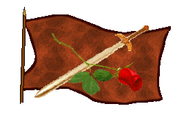
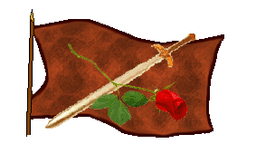

| Übersicht,
Anschläge und Stammtisch (RPG) |
|
Schiffsregister
|
| Ahab der Graue (RIP) |
heute vom Stapel gelaufen:
Barke Yoroko, Eigner Ahab der Graue, kein Heimathafen (Trampsegler)
Ahab der Graue
Zur 12. Stunde am 64.Saatmond im Jahre 417 |
20.08.04 1:39
 |
|
| Katrice Cambrensis (RIP) |
Meinen Explorer, Windrose, habe ich mittlerweile verkauft.
Dazu besitze ich neben meiner bereits eingetragenen Fregatte noch eine
Galleone namens "Seestöpsel" im Raum Kuslik/Novgorod
Katrice Shimo
Zur 14. Stunde am 65.Saatmond im Jahre 417 |
20.08.04 7:34
|
|
| Sigarni von Tacheless (RIP) |
Soeben in See gestochen ist die Galleone mit dem Namen Gondolin . Ihr Heimathafen wird Wild Cats Ressort sein .
Lady Sigarni,
Vorsteherin von Wild Cat Ressort
Zur 19. Stunde am 65.Saatmond im Jahre 417 |
20.08.04 8:49
|
|
| Lyselle Duval (RIP) |
Hannad bo Mia-
Ein Expeditionsschiff, das normalerweise in lailoss vor Anker liegt.
Einen Dank an Mia von Tacheless soll dieses Schiff zum Namen haben!
Lady Lyselle Duval
Zur 9. Stunde am 67.Saatmond im Jahre 417 |
20.08.04 17:42
|
|
| Mia von Tacheless (RIP) |
*sich freut*
Baronesse Mia von Tacheless,
Ministerialrätin für Seefahrt und Stadt,
Ehefrau des ehrenwerten Leandran
Zur 10. Stunde am 67.Saatmond im Jahre 417 |
20.08.04 17:55
|
|
| Faelon von Fidelitas (RIP) |
Golden Hind, Galleone, Heimathafen Tarn Faidwen (Nordloh) und Rebellenfeste (Lagerinsel), da ich immer hin und herfahre kann ich keinen einzelnen Heimathafen angeben.
Baron Faelon von Fidelitas,
Vorsteher von Bourgh des Brigandes,
Anführer der glorreichen Nation "Rebellen der Freiheit",
Kapitän der Gonathra Meleth und der Golden Hind
Zur 11. Stunde am 67.Saatmond im Jahre 417 |
20.08.04 18:03
|
|
| Zarcó der Cho-Arrîm (RIP) |
Name: Duana
Art: Expeditionsschiff
Hafen: Aldamir
Zarcó der Cho-Arrîm,
Diplomat von Kanubia
Zur 6. Stunde am 85.Saatmond im Jahre 417 |
24.08.04 21:52
|
|
| Marian Saptecai (RIP) |
Name: Windsplitter
Art: Expeditionsschiff
Hafen: Minuial
ist schon etwas älter das schiff, ich hatte aber keine zeit bisher, es anzumelden ;-)
Marian Saptecai,
Priester im Dienste des einzig wahren Glaubens an Urvan
Zur 7. Stunde am 85.Saatmond im Jahre 417 |
24.08.04 21:57
|
|
| Pyriandar (RIP) |
Name: Ars Amandi
Art: Galleone
Hafen: Zauberwald
Freiherr Pyriandar,
Vorsteher von Zauberwald
Zur 19. Stunde am 8.Blumenmond im Jahre 417 |
28.08.04 1:32
|
|
| Shinji Ikari (RIP) |
Name: Ayanami
Art: Handelsschiff
Hafen: Bengalore
Shinji Ikari
Zur 20. Stunde am 8.Blumenmond im Jahre 417 |
28.08.04 1:46
|
|
| Norfin Meivra (RIP) |
Name: Sturmwind
Art: Explorer
Hafen: Alte Liebe
Besitzer: Ich ^^
Norfin Meivra
Zur 1. Stunde am 10.Blumenmond im Jahre 417 |
28.08.04 8:34
|
|
Silencio
   |
Name: Nachtwind
Art: Explorer
Hafen: Hafeninsel
Besitzer: Silencio
Name: Windjammer Obscura
Art: Fregatte
Hafen: Hafeninsel
Besitzer: Silencio
Name: San José de la Noche
Art: Galleone
Hafen: Hafeninsel
Besitzer: Silencio
Name: Nachtspi
Art: Barke
Hafen: Hafeninsel
Besitzer: Silencio
Fahrten und Preise: Auf Anfrage :-)
Ich hoffe die Liste geht bald wieder online, zur Vollständigkeit hier die mit größte und schnellste Flotte der Scherbe (wie ich bisher sehe)
- die Takelage ist mit eigener Hand entworfen und ohne Besammast, dafür wurde ein neues Segel - Genacker - für raumige Fahrten aufgebaut und ich behaupte es gibt kein Schiff was härtere Am-Wind-Kurse fahren kann, als die "Nachtwind" - wer mich herausfordern will - melde sich bitte am "Leuchtturm der Hafeninsel" - er leuchtet die Passage zum Hafen für alle Seefahrer aus
Sir Silencio,
Vorsteher von St.Helena
Zur 18. Stunde am 15.Blumenmond im Jahre 417 |
29.08.04 16:35
|
|
Gilgamesh
  |
Name: Wüstenwind
Art: Explorer
Heimathafen: Lunaé
Besitzer: selbst ;-)
Name: Tranfänger
Art: Galleone
Heimathäfen: zwischen Lunaé und Solaris
Besitzer: wie oben
((Wann geht denn der Link wieder?))
Gilgamesh
Zur 19. Stunde am 15.Blumenmond im Jahre 417 |
29.08.04 16:44
|
|
| Viridia (RIP) |
Name: Corro del Honor
Art: Barke
Hafen: Long Island
Besitzer: Viridia
Viridia,
Verlobte des ehrenwerten Celebrimbor
Zur 10. Stunde am 20.Blumenmond im Jahre 417 |
30.08.04 18:39
|
|
| Jasmin Elanshin (RIP) |
Name: Sirrah
Art: Barke
Hafen: noch nicht bekannt
Besitzer: Jasmin Elanshin
Vielen Dank an Archaon ;)
Jasmin Elanshin
Zur 24. Stunde am 57.Blumenmond im Jahre 417 |
08.09.04 13:14
|
|
Elániel Vanyië
  |
Name: "Quenya"
Schiff: Barke
Name: "meril en dahén"
Schiff: Fregatte
Hafen: Lois Thuatail (Hafeninsel)
Besitzer: Ella von Dahén
Baronesse Ella von Dahén,
Anführerin der glorreichen Nation "Freie Siedler von Thuatail",
Ehefrau des ehrenwerten Zipfelmütz von Dahén
Zur 15. Stunde am 3.Erntemond im Jahre 417 |
16.09.04 20:40
|
|
| Ahab der Graue (RIP) |
Name: ´Rapa Nui´
Schiff: Fregatte
Heimathafen: keiner
Besitzer: Ahab der Graue
Barke ´Yoroko´ wurde übrigens abgewrackt.
Ahab der Graue
Zur 5. Stunde am 55.Erntemond im Jahre 417 |
28.09.04 21:35
|
|
| Tarabas (RIP) |
Handelsschiff: ´Last Hope´
Fregatte: ´First Desire´
Heimatanleger für beide: Eschatiôtês, Kontinent Loh, Ostseite
Reeder: ich
Kapitän: Blar Corbmac
Tarabas
Zur 18. Stunde am 88.Erntemond im Jahre 417 |
06.10.04 17:18
|
|
| Ganthor Larena (RIP) |
Moloch, getauft auf den Namen
"Herrscherin der Südmeere"
Heimathafen: Bengalore
Besitzer: Ganthor Larena
Ganthor Larena,
Kardinal im Dienste des einzig wahren Glaubens an Bendur,
Anführer der glorreichen Nation "Seefahrerorden zu Bengalore"
Zur 23. Stunde am 88.Erntemond im Jahre 417 |
06.10.04 18:24
|
|
| Claudius der Ältere (RIP) |
Schiffsname: Unsinkbar II
Typ: Fregatte
Ort: Länderein von Loh
Eigner: Claudius und seine Zwergencrew
Claudius der Ältere
Zur 24. Stunde am 88.Erntemond im Jahre 417 |
06.10.04 18:35
|
|
| Nemo van Delving (RIP) |
Schiffsname: Navisko
Typ: Barke :)
Ort: Arandor Venenia, wo auch immer :)
Besitzer: Nemo van Delving
Nemo van Delving,
Priester im Dienste des einzig wahren Glaubens an Urvan
Zur 24. Stunde am 88.Erntemond im Jahre 417 |
06.10.04 18:43
|
|
| Lyselle Duval (RIP) |
Das Erkundungsschiff "Hannad bo Mia" und der Großsegler mit dem namen "Vainqueur de la tempete"
werden nun offiziell nach Tal en Ithryn verlegt!
Bendur zum Gruße,
Lyselle Duval,
Verlobte des ehrenwerten Ardán Fálmanôr von Nerôná
Zur 1. Stunde am 89.Erntemond im Jahre 417 |
06.10.04 19:01
|
|
| Ganthor Larena (RIP) |
Riffwal
Galleone - Bengalore
Ganthor Larena,
Kardinal im Dienste des einzig wahren Glaubens an Bendur,
Anführer der glorreichen Nation "Seefahrerorden zu Bengalore"
Zur 6. Stunde am 37.Dunkelfrost im Jahre 417 |
15.10.04 16:50
|
|
| Viridia (RIP) |
Meine Barke wurde durch eine Fregatte ersetzt
Fregatte - Garden of Hope - Long Island
regelmässig auf Reisen nach Kanubia
Viridia,
Priesterin im Dienste des einzig wahren Glaubens an Wendaria,
Verlobte des ehrenwerten Celebrimbor
Zur 6. Stunde am 37.Dunkelfrost im Jahre 417 |
15.10.04 16:52
|
|
| Gavilan (RIP) |
Soeben ist meine Fregatte vom Stapel gelaufen.
"Albatros"
Möge Bendur dich auf deinen Reisen begleiten.
Gavilan
Zur 18. Stunde am 41.Saatmond im Jahre 418 |
06.11.04 18:06
|
|
| Kassandra Alfiriel (RIP) |
wird diese liste noch gepflegt?
ich nenne drei schiffe mein eigen:
Name: Seeschwalbe
Ort: Insel Loh
Typ: Expeditionsschiff
Name: Wogentänzer
Ort: Insel Loh
Typ: Fregatte
Name: Wellenalbatros
Ort: Hafen
Typ: Barke
Kassandra Alfiriel,
Kardinälin im Dienste des einzig wahren Glaubens an Pheron,
Ehefrau der reizenden Piéròtéss Alfiriel
Zur 3. Stunde am 32.Dunkelfrost im Jahre 419 |
31.03.05 12:36
|
|
| Kungol Seebeißer (RIP) |
http://www.scherbenwelten.de/kommnew.php?css=&gesucht=1&kategorie=1&beitrag=39723
Esnabur,
Hohepriester im Dienste des einzig wahren Glaubens an Bendur,
Senator der Academia ars Arcana,
Verlobter der reizenden Nangilima
Zur 5. Stunde am 32.Dunkelfrost im Jahre 419 |
31.03.05 13:07
|
|
| Háril Glyndil (RIP) |
In memoriam an Brenden, der die Kaperfahrer verlassen hat, habe ich meine soeben erworbene Barke "Hase(e)nschwanz" getauft.
Der Ankerplatz ist Ferne Zuflucht.
Piéròtéss Alfiriel,
Priesterin im Dienste des einzig wahren Glaubens an Tura,
Ehefrau der reizenden Kassandra Alfiriel
Zur 15. Stunde am 84.Blumenmond im Jahre 420 |
24.05.05 18:18
|
|
Tonja Dragus
  |
meine Fregatte: Shirocco
meine Galeone: Rivanna
Ankerplatz: Quo Veheris, Kyll
Lady Tonja,
Vorsteherin von Stullenberg
Zur 3. Stunde am 85.Blumenmond im Jahre 420 |
24.05.05 20:58
|
|
| Eleonore von Aquitanien (RIP) |
das hier vorliegende schiffsregister ist shcon lange veraltet und wird nichtmehr geführt, es gibt schon seid einiger zeit ein neues
Eleonore von Aquitanien,
Vorsteherin von Bendurs Geheiligte Hallen,
Kardinälin im Dienste des einzig wahren Glaubens an Bendur,
Diplomatin der Turris Fortis,
Freundin der Kräuterinsel-Wichtel
Zur 3. Stunde am 85.Blumenmond im Jahre 420 |
24.05.05 21:03
|
|
Klaus Störtebeker
  |
Und hier ist es zu finden:
http://www.scherbenkarte.de.vu/register/index.php
Sir Klaus Störtebeker,
Hohepriester im Dienste des einzig wahren Glaubens an Bendur
Zur 21. Stunde am 85.Blumenmond im Jahre 420 |
25.05.05 1:15
|
|
| Don Marco el Chorro (RIP) |
Buenos Dias!
Ich möchte gerne die "Donna Beleza" anmelden.
Sie ist eine "Fregatte" und hat den Heimathafen auf der "Nebelinsel" und gehört mir:"Don Marco el Chorro"
Seid ihr so gnädig,dies Schiff aufzunehmen?
Ich Dank euch mal im voraus!
Don Marco el Chorro,
Seewolf und Capitán der Donna Belleza
Zur 2. Stunde am 30.Erntemond im Jahre 420 |
02.06.05 1:09
|
|
| Eleonore von Aquitanien (RIP) |
http://www.scherbenkarte.de.vu/
der von Bruder Klaus angegebene Link ist nichtmehr aktuell
Eleonore von Aquitanien,
Vorsteherin von Bendurs Geheiligte Hallen,
Kardinälin im Dienste des einzig wahren Glaubens an Bendur,
Diplomatin der Turris Fortis,
Sonderbeauftragte des Bendurkonventes,
Freundin der Kräuterinsel-Wichtel
Zur 6. Stunde am 31.Erntemond im Jahre 420 |
02.06.05 7:41
|
|
Klaus Störtebeker
|
Doch, er ist nach wie vor aktuell, er führt zum selben Ziel, nur eben direkt ;)
Zur Ergänzung, da vielleicht nicht deutlich dargestellt:
Im neuen Schiffsregister kann jeder die Eintragungen selber vornehmen. Eintragungen hier in diesem Anschlag sind also nicht länger notwendig & werden in der Regel auch nicht übertragen.
Sir Klaus Störtebeker,
Vorsteher von Catalia,
Hohepriester im Dienste des einzig wahren Glaubens an Bendur
Zur 20. Stunde am 32.Erntemond im Jahre 420 |
02.06.05 16:33
|
|
| Eleonore von Aquitanien (RIP) |
bei mir kommt bei dem Link :
http://www.scherbenkarte.de.vu/register/index.php
nichts
Eleonore von Aquitanien,
Vorsteherin von Bendurs Geheiligte Hallen,
Kardinälin im Dienste des einzig wahren Glaubens an Bendur,
Diplomatin der Turris Fortis,
Sonderbeauftragte des Bendurkonventes,
Freundin der Kräuterinsel-Wichtel
Zur 1. Stunde am 33.Erntemond im Jahre 420 |
02.06.05 17:43
|
|
| Sakuretsu van Graufurt (RIP) |
Nun wenn sich hier alle soweit ich sehen kann einfügen mit ihren Schiffen, werde ich dies wohl auch tun.
Name: "Fischkutter"
Typ: Fischerboot
Heimatanleger: Nordlicht
Besitzer: Sakuretsu van Graufurt
Name: "Algenfänger"
Typ: Barke
Heimatanleger: Nordlicht
Besitzer: Sakuretsu van Graufurt
Name: "Penne"
Typ: Handelsschiff
Heimatanleger: Nordlicht
Besitzer: Sakuretsu van Graufurt
Name: "Speedolos"
Typ: Fregatte
Heimatanleger: Nordlicht
Besitzer: Sakuretsu van Graufurt
Name: "Staubfänger"
Typ: Galeone
Heimatanleger: Nordlicht
Besitzer: Sakuretsu van Graufurt
Name: "Skullures"
Typ: Expeditionsschiff
Heimatanleger: Nordlicht
Besitzer: Sakuretsu van Graufurt
Name: "Warenkutsche"
Typ: Moloch
Heimatanleger: Aerlinn
Besitzer: Sakuretsu van Graufurt
Hmm...glaub das waren alle.
Bendur mit Euch,
Sakuretsu van Graufurt,
Hohepriester im Dienste des einzig wahren Glaubens an Bendur
Zur 23. Stunde am 33.Erntemond im Jahre 420 |
02.06.05 22:53
|
|
| Raphael (RIP) |
Ich wiederhole das gerne nochmal:
Das Schiffsregister ist auf www.scherbenkarte.de.vu zu finden, und darin kann jeder zuunterst mit "neue datensätze einfügen" sein(e) Schiff(e) selber eintragen...
Raphael,
Kardinal im Dienste des einzig wahren Glaubens an Bendur,
Alveranischer Meister der Seefahrt und Fischerei
Zur 1. Stunde am 34.Erntemond im Jahre 420 |
02.06.05 23:26
|
|
| Raphael (RIP) |
*aus den Tiefen des Brettes hervorgekramt*
Raphael,
Vorsteher von Bendurs Geheiligte Hallen,
Kardinal im Dienste des einzig wahren Glaubens an Bendur,
Alveranischer Meister der Seefahrt und Fischerei
Zur 17. Stunde am 15.Dunkelfrost im Jahre 421 |
11.09.05 16:48
|
|
Übersicht,
Anschläge und Stammtisch (RPG)
|